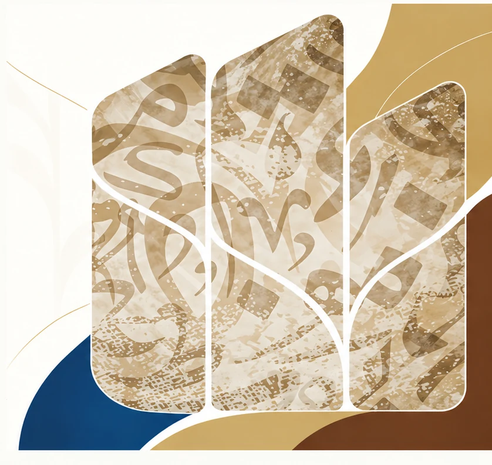

ثقافة أدب مجتمع
الأدب والفن… بلسان المجتمع
جمعية أفانين الثقافية الأدبية، منصة مجتمعية تُعنى بالثقافة والأدب، وتسهم في صناعة الحراك المعرفي وتعزيز القيم الإبداعية في مجتمعنا.
إسهام في بناء جيل قارئ ومبدع
مجتمع مبدع وشراكات فاعلة
برامج أدبية وثقافية نوعية

من يوميات أفانينالأخبار المعتمدة
حراكٌ ثقافي... وأثرٌ يتجدد
المزيد من الأخبارتُنشر الأخبار والمبادرات بعد مراجعتها واعتمادها؛ العناوين أعلاه أبواب للمحتوى وليست أخبارًا عن فعاليات منفذة.
جمعية أفانين
من مكة المكرمة، نفتح آفاقًا جديدة للفكر والإبداع.
تسعى أفانين إلى أن تكون مساحة تجمع المهتمين بالأدب والثقافة والفنون، وتُتيح للحوار والمعرفة والبرامج الثقافية أن تترك أثرًا مستمرًا في المجتمع.
الأدبالفنونالثقافة المجتمعيةالشراكات
تعرف على الجمعيةمساحات العمل
تتعدد المسارات... ويلتقي الأثر.
تعرف على البرامج والمبادرات والخدمات من أقسام الموقع الرسمية.
كن جزءًا من الحراك الثقافي.
انضم إلى مجتمع أفانين، وشارك في صناعة تجربة ثقافية مُلهمة.